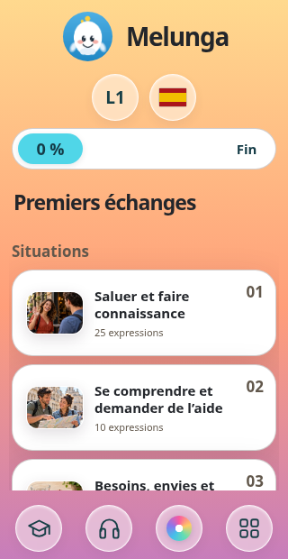
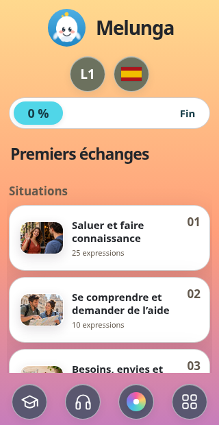

Verre clair
Une transparence légère et un contour fin.
Quatre finitions translucides, avec un cercle individuel pour chaque fonction. Le niveau et la langue sont séparés, les raccourcis restent à portée de pouce.
Une transparence légère et un contour fin.
Un verre plus clair et flouté pour détacher les icônes.

Un verre teinté, avec les symboles en blanc.

Des cercles transparents avec un léger relief.